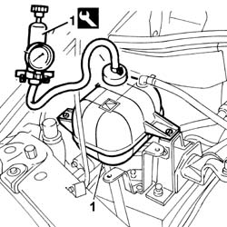
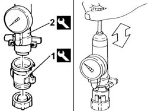

0510C30 cooling system - tightness test
- Path
- Procedures > 05 DIAGNOSIS > 0510 VARIOUS CONTROLS > 0510C check systems > 0510C30 cooling system - tightness test
- Kind
- repair procedure (removal / refitting; the operation number is the code)
- Applies to
- all engines; all production periods
- Interactive page
- https://sloeber94.github.io/elrnDB-fDbl/en/#/2584143
Applies to: all engines; all production periods
Unscrew and remove the cap from the coolant expansion tank.
1. Screw onto the tank filler the kit for various models (or alternatively connection 1.895.362.007 connected to pump 1.895.377.002).
 | Name | Country |
|---|---|---|
1 | Kit for various models | 1.895.377.000 |
| Name | Country |
|---|---|---|
1 | Connector | 1.895.362.007 |
| Name | Country |
|---|---|---|
- | Pump | 1.895.377.002 |

Applies to: all engines; all production periods
Manually pressurize the system and check that the pressure gauge reading remains constant at the specified value.
 | Measurement | Value | |
|---|---|---|---|
- | Check pressure seal (bar) | 1.48 |
Remove the tool from the expansion tank.
1. Screw the specific connector onto the coolant tank cap.
| Name | Country |
|---|---|---|
1 | Connector | 1.895.362.007 |
2. Connect onto the connector the kit for various models (or alternatively pump 1.895.377.002).
| Name | Country |
|---|---|---|
2 | Kit for various models | 1.895.377.000 |
| Name | Country |
|---|---|---|
- | Pump | 1.895.377.002 |

Applies to: all engines; all production periods
Manually pressurize the cap and check on the pressure gauge that the pressure relief valve on the cap opens at the specified pressure.
| Measurement | Value | |
|---|---|---|---|
- | Check pressure seal (bar) | 1.39 ÷ 1.41 |
Unscrew the cap from the tool and screw it onto the coolant tank.